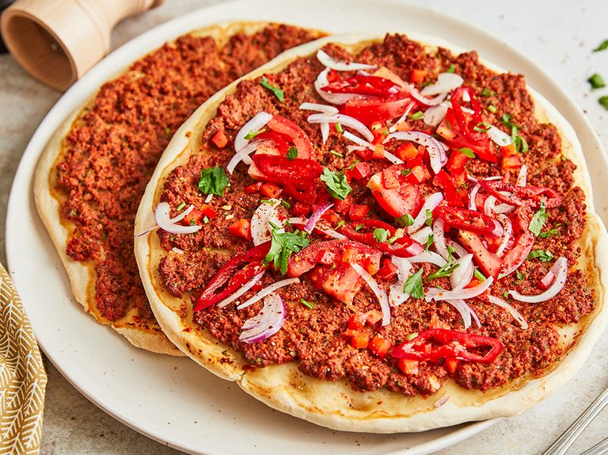

Even though lahmacun is popularly nicknamed Turkish pizza, that name doesn't really do justice to what this crunchy, doughy treat topped with spicy minced meat truly represents. In Turkey, lahmacun is the ultimate street food and a favorite lunchtime snack. It can be found at numerous street stalls as well as in virtually any traditional Turkish restaurant, but also in kebab eateries where they typically serve mini lahmacuns as appetizers. The perfect lahmacun is made by rolling a ball of sturdy semolina dough into a thin disc which is only lightly spread with meat - either lamb or beef, minced to a paste together with chili, onions, and other seasonings.
Meal prep time : 3 hours 55 minutes
Servings : 4